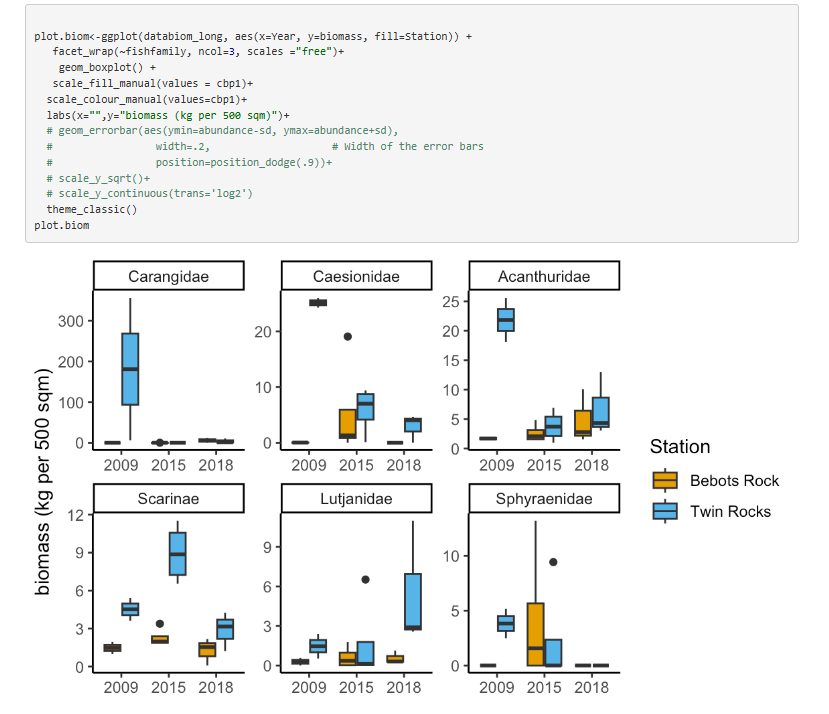
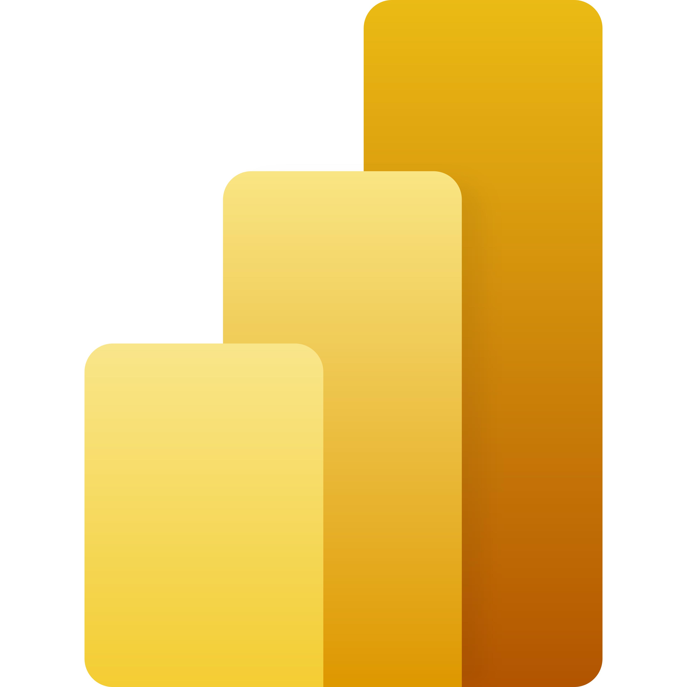

Case Studies
Scenario-based analyses that simulate real-world decision-making contexts, focusing on business impact, trade-offs, and analytical reasoning.

E-commerce Revenue & Customer Segmentation (Python + Streamlit)
In ProgressEnd-to-end case study using transaction-level ecommerce data: cleaning, KPI analysis, RFM segmentation, and a 2-page business dashboard.

Mortgage Trading Analysis (Power BI)
Simulated a real-world mortgage trading desk scenario using Power BI and DAX to analyze loan bids, trade pricing, and premiums.

Omnibus Disclosures Analysis Upcoming
Comparative analysis of omnibus disclosure data focusing on transparency, materiality, and reporting consistency.
Projects
A curated selection of projects in data analysis, machine learning, sustainability research, and decision-support systems.
Stock Trading Simulation with Gymnasium (Python)
Machine-learning trading simulation that identifies buy and sell opportunities using historical Apple stock data.

Fish Community Assemblage Analysis (R)
Long-term ecological data analysis in R examining how marine protection influences reef fish abundance and biomass.

Grocery Store Sale Analysis (SQL)
Exploratory analysis of grocery pricing to evaluate product coverage across customer budget ranges.
Skills
Core competencies across sustainability data, analysis, quality assurance, and visualization.

ESG & Sustainability
Data Quality & QA


Data Analysis


Data Visualization
Education & Certifications
Academic training and professional certifications supporting analytical and sustainability-focused work.
Associate Data Analyst in SQL Career Track
DataCamp · December 2025 · Data Engineering Philippines Scholarship
Advanced SQL, PostgreSQL, joins & subqueries, window functions, exploratory analysis, statistics, and data-driven decision-making.
View certificateData Analytics Professional Certificate
Coursera · April 2023
Data cleaning, analysis, visualization, spreadsheets, SQL, R, and Tableau.
View certificateBachelor of Science in Biology, Major in Zoology
University of the Philippines Los Baños · August 2022
Honors thesis analyzing a decade of reef fish monitoring data using R. Published in IRJIEST (Volume 10, Special Issue 2024).
Awardee, Department of Science and Technology (DOST) Merit Scholarship.
View diploma